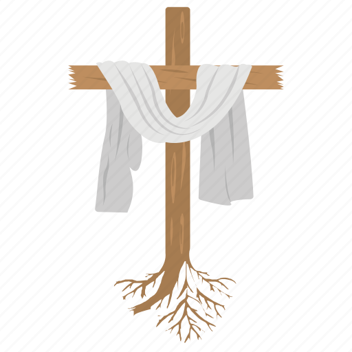

Siedem grzechów głównych
Pycha
Chciwość
Nieczystość
Zazdrość
Łakomstwo
Gniew
Lenistwo
Ankieta
<p>test</p>
Katolicki Kościół Narodowy
Parafia Matki Boskiej Zwycięskiej w Warszawie
Parafia Opatrzności Bożej w Warszawie
Szczepan Krawczyk
2TB